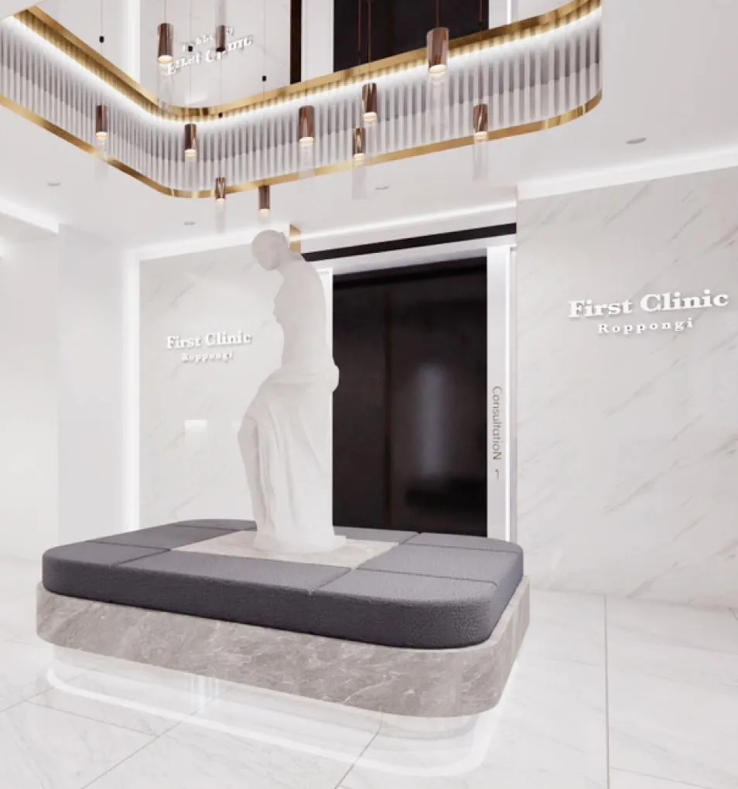
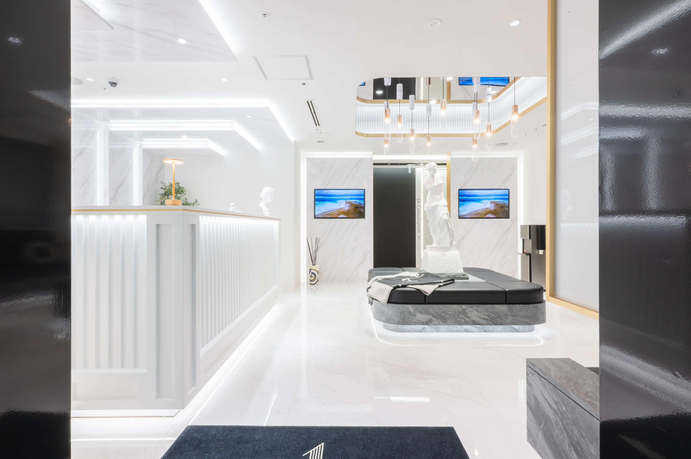
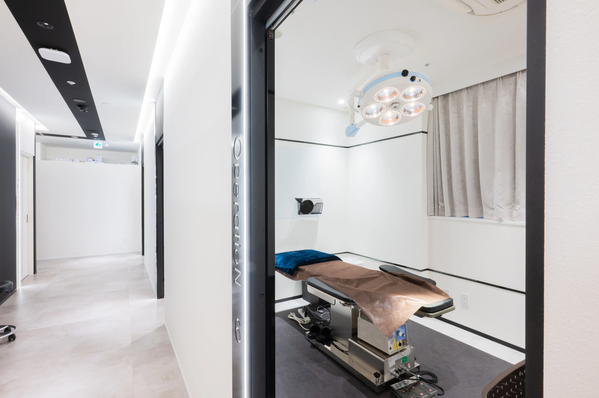
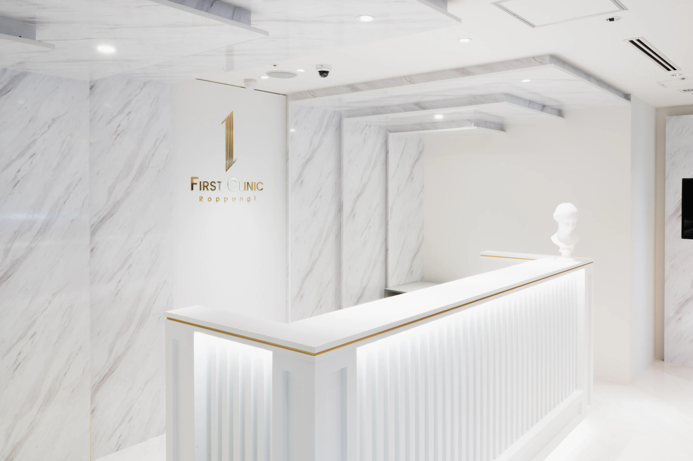

脂肪吸引
で、
理想のラインに向き合う。
気になる部分を、ただ細くするのではなく。
全身のバランスまで考えたラインへ。
脂肪のつき方も、皮膚の状態も、
一人ひとり違います。
だからこそ、あなたと真剣に「向き合い」、
取る脂肪と、残す脂肪を見極める。
体型とご希望に合わせたデザインで、
自然で美しい仕上がりを目指します。
脂肪吸引のこだわり
～美しいボディラインのために大切にしていること～
脂肪吸引の実績
大手美容外科グループ内での脂肪吸引症例数 関東No.1（2024年上半期）。通算脂肪吸引症例数2,500件以上の経験をもとに、体型やご希望に合わせた治療を考えます。
※関東No.1は、在籍した大手美容外科グループ内における2024年上半期の脂肪吸引症例数の実績です。
幅広い部位に対応
腹部・土手（恥骨上）・肋骨上・脇下など、細かな部位までご相談いただけます。複数部位や全身の脂肪吸引も、体への負担や適応を診察で判断。吸引した脂肪を活用する脂肪豊胸もご相談いただけます。
※一度に施術できる範囲は個別に判断します。脂肪豊胸の適応・必要量・追加費用は診察でご案内します。
仕上がりの美しさ
脂肪吸引は、脂肪を多く取ればよいわけではありません。凹凸やたるみのリスクに配慮し、皮膚や脂肪の状態に合わせてデバイスとカニューレを使い分けます。取る脂肪と残す脂肪を見極め、なめらかなラインを目指します。
多彩なデバイスの選択肢
PAL、クォンタム、エンブレイス、LSSA、VASER。複数のデバイスから、部位や脂肪・皮膚の状態、ご希望に合わせて選択します。機器ありきではなく、その方に必要な方法を考えます。
※使用機器・適応・追加費用は診察時にご説明します。
変化とバランスを考えたデザイン
体型や脂肪のつき方に合わせて、デザインと吸引量を調整します。気になる部位だけでなく、周囲とのつながりにも目を向け、自然ですっきり見えるボディラインを目指します。
※仕上がり・変化量には個人差があります。
吸引管へのこだわり
部位や脂肪の層に合わせて、複数の特注カニューレを使い分けます。繊細な調整が必要な部分まで丁寧にアプローチし、均一でなめらかな仕上がりを目指します。
ダウンタイムに配慮
麻酔、カニューレ、アプローチ方法を工夫し、体への負担に配慮します。施術範囲や状態に応じた方法を検討し、術後の経過や圧迫・過ごし方までご説明します。
※腫れ・内出血・痛み・拘縮などが生じることがあります。程度や回復期間には個人差があります。
Message from Doctor
安心できる環境を、
あなたのために。
First Clinic 共同代表の松田 裕太と申します。 私は、何よりもお客様の満足を考えて施術を行います。 そのためには、お客様と「向き合う」ことを大事にしています。
脂肪吸引では、細さだけでなく、体全体のバランスや自然なラインを大切にしています。 できることと難しいこと、リスクまで丁寧にお伝えし、一緒に治療を考えます。
施術を決める前に、気になる部位や理想のイメージ、不安なことをお聞かせください。 診察から術後の経過まで、一人ひとりに向き合います。
松田 裕太
First Clinic Co-Representative
経歴・資格
Career History
-
Education東京医科歯科大学医学部医学科 卒業ソウル大学 visiting student elective program 修了
-
総合病院土浦協同病院 勤務（形成外科、皮膚科）
-
大手美容クリニック 豊洲院 勤務
-
大手美容クリニック 銀座院 勤務
-
大手美容クリニック 新横浜院 院長
-
First Clinic 設立
Qualifications
Clinic
院内紹介

Entrance
洗練された空間

Operation Room

Reception
First Clinic
お客様にとっての「First（最優先）」な
クリニックでありたい。
一人ひとりのご希望に、丁寧に向き合います。